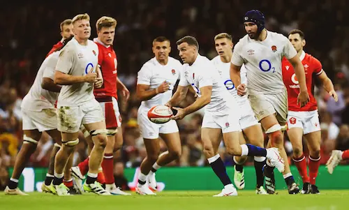
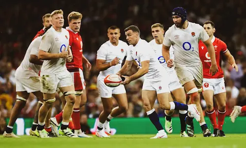

Information about South Africa
The South Africa national rugby union team, commonly known as the Springboks, is the country's national team governed by the South African Rugby Union. The Springboks play in green and gold jerseys with white shorts, and their emblem is the Springbok, a native antelope and the national animal of South Africa.
movie

Information about New Zealand
The New Zealand national rugby union team, commonly known as the All Blacks, represents New Zealand in men's international rugby union, which is considered the country's national sport. Famed for their international success, the All Blacks have often been regarded as one of the most successful sports teams in history.
Information about England
The England national rugby union team represents the Rugby Football Union in men's international rugby union. They compete in the annual Six Nations Championship with France, Ireland, Italy, Scotland and Wales.

Information about Argentina
The Argentina national rugby union team represents Argentina in men's international competitions, The Argentine Rugby Union. Officially nicknamed Los Pumas, they play in sky blue and white jerseys. They are ranked 5th in the world by World Rugby, making them by some distance the highest-ranked nation in the Americas.